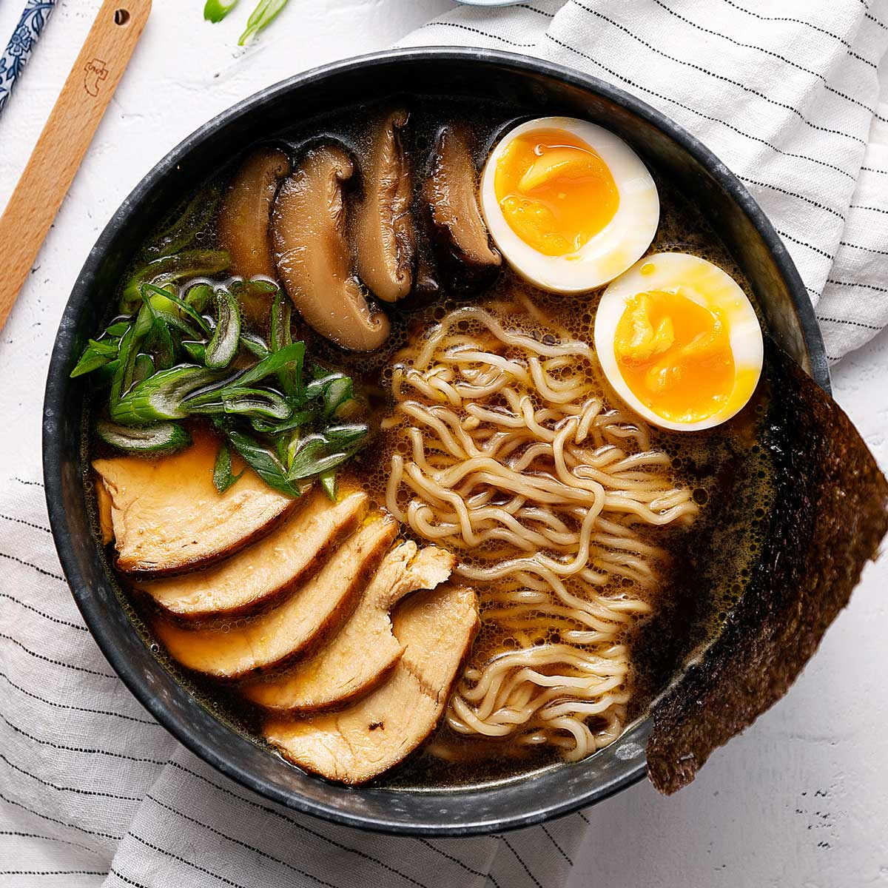

Ramen Recipe

Ingredients
4 cup chicken stock (1 liter)
6 dry shiitake , whole
4 garlic cloves , whole end peeled
1 teaspoon sugar
1 tablespoon butter (30 g)
¼ cup less sodium soy sauce (60 ml)
1 teaspoon dark soy sauce
1 teaspoon oil
1 teaspoon suga
½ teaspoon salt
1 chicken breast , skinless and boneless
2 eggs
5.3 oz dry egg noodles (150 g)
spring onion
nori sheet
Steps
Preheat oven at 400ºF(200ºC) using upper and lower heat. Boil some water in 2 pots. Heat an iron skillet on medium high heat with a bit of oil. Prepare a bowl of water with ice cubes.
Add everything in a pot, cover and simmer for 20 minutes.
Add all ingredients in a bowl and mix well. Char the chicken on a hot iron skillet for 1-2 minutes, on both sides. Then place in the oven on the upper ⅓ rack, for 10-15 minutes or until fully cooked.
Once the water is boiling in a pot, gently add in the eggs and immediately lower the fire. Leave to simmer for 6 ½ minutes and then place the eggs into the ice water bowl. Leave to cool completely before peeling them. Set aside.
Add the noodles into another pot of boiling water and cook according to the packet's instructions. Drain the noodles and set aside.
Discard garlic and ginger from the broth. Slice the shiitake and some spring onion. Slice the chicken in thin slices.
Ladle some broth into 2 bowls. Add in the noodles, followed by chicken slices and shiitake. Slice the eggs and place in each bowl. Finish off with some sliced spring onion and tuck in a piece of nori sheet on one side of the bowl. Serve immediately!